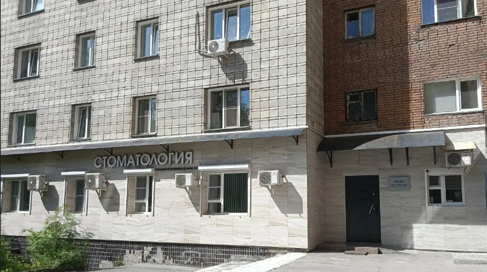
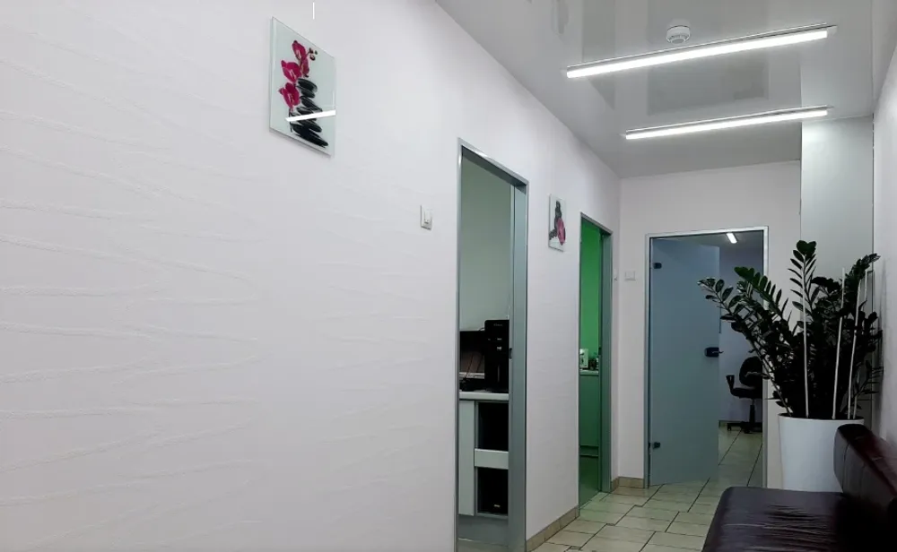
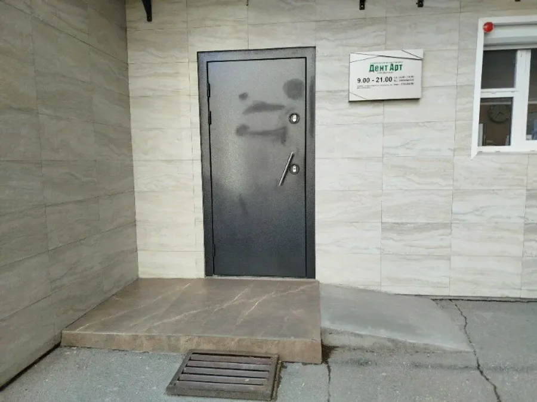
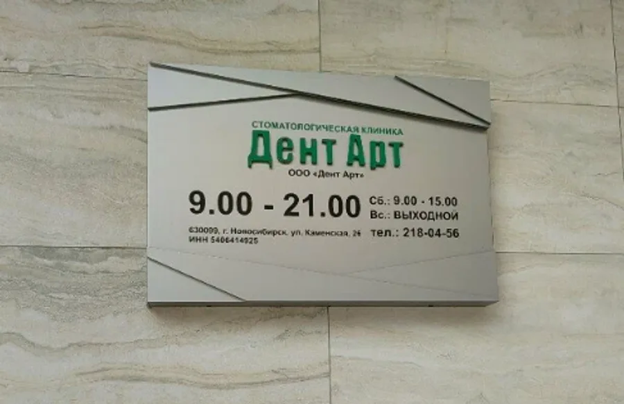

Лечение для детей и взрослых
Стоматология «Дент Арт»
Лечение зубов для детей и взрослых на Каменской, 26
- 4,8 на Яндекс.Картах · 86 оценок
- Лечим детей и взрослых
- По отзывам, работают по ДМС

Что лечим и сколько это стоит
Прайс по позициям уточняйте при записи, точную сумму называют после осмотра.
Лечение и гигиена
- Осмотр и консультациятерапевт, детский стоматологуточнить
- Лечение зубовкариес, пломбыуточнить
- Профессиональная чисткагигиена полости ртауточнить
- Отбеливаниепо записиуточнить
Хирургия и протезирование
- Удаление зубовстоматолог-хирургуточнить
- Имплантацияпо результатам осмотрауточнить
- Протезированиекоронкиуточнить
Есть противопоказания, проконсультируйтесь с врачом.
Как проходит первый визит
- 01
Записываетесь
Через форму на сайте или по телефону. Выбираете удобные день и время.
- 02
Осмотр и разговор
Врач смотрит, объясняет, что происходит и какие есть варианты.
- 03
План лечения
Решаете вместе, с чего начать и в каком порядке.
- 04
Лечение
Врач объясняет, что делает. Детей принимает детский стоматолог.



Что пациенты отмечают в отзывах
Лечат семьями
Пациенты пишут, что лечатся здесь всей семьёй, с детьми, годами.
Приветливые администраторы
В отзывах отмечают вежливый персонал и приветливого администратора.
Принимают по ДМС
Пациенты пишут, что клиника работает по ДМС.
Уютная небольшая клиника
Пациенты называют клинику небольшой, красивой и чистой.
Отзывы с Яндекс.Карт
«Самая лучшая клиника. Елена Григорьевна лучший врач! В ее руках совсем не страшно лечить зубы!»
Ирина Т. · 14 октября 2024
«Не большая клиника, приветливый администратор, работают по ДМС, хожу несколько лет к стоматологу, к которой пока нет претензий, делает качественно, профессионально, быстро.»
Юлия · 28 декабря 2024
«Отличная стоматология по адекватной цене»
Елена Л. · 11 мая
Отзывы с карточки на Яндекс.Картах, без правок.
Частые вопросы
Принимаете детей?
Да, пациенты пишут о лечении детей в клинике. Возраст и порядок приёма уточняйте при записи.
Работаете по ДМС?
Пациенты в отзывах пишут, что лечились по ДМС. Условия уточняйте у администратора.
Сколько стоит лечение?
Цену называют после осмотра. Прайс по позициям уточняйте при записи.
Когда вы работаете?
Пн–Пт с 9:00 до 21:00, суббота с 9:00 до 15:00, воскресенье выходной (по табличке на входе).
Запишитесь на удобное время
- Адрес
- ул. Каменская, 26, этаж 1, Новосибирск, Новосибирск
- Часы
- Пн–Пт 9:00–21:00, Сб 9:00–15:00, Вс – выходной
- Телефон
- +7 (383) 218-04-56